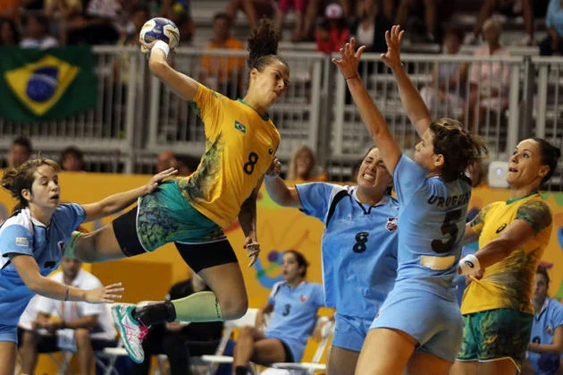
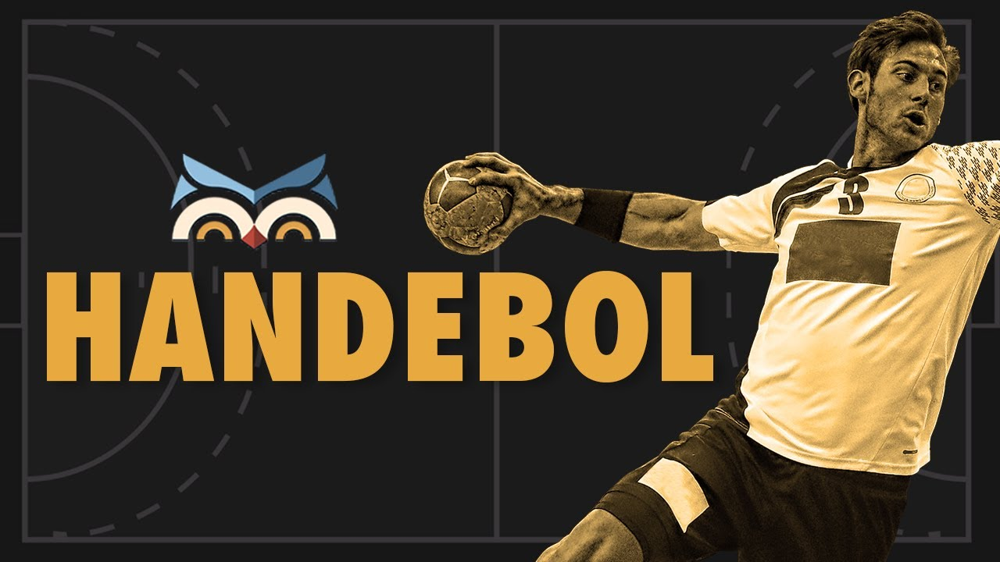

O Handebol é um desporto praticado numa quadra dividida em duas partes, possuindo duas equipes de sete jogadores em cada lado, sendo seis de linha e um goleiro.

Jogo de Handebol
Origem:
O handebol foi criado em 1919 pelo atleta e professor de educação física alemão Karl Schelenz (1890-1956). Nesse ano, ele e outros parceiros de trabalho reformulam um esporte para deficientes visuais chamados de torball. No começo de sua criação, o handebol era jogado ao ar livre (em gramados), agora, o esporte é executado em quadras fechadas de 40 por 20 metros. Além disso, no ínicio o handebol era um jogo exclusivo para mulheres.

Handebol
Onde ele é mais desenvolvido:
É um esporte com certa popularidade em países como Espanha, Alemanha, Suécia, Noruega, França, Islândia, Croácia, entre outros e ainda está aumentando sua popularidade na Dinamarca e em países latinos-americanos, como a República Dominicana, a Argentina e o Brasil.